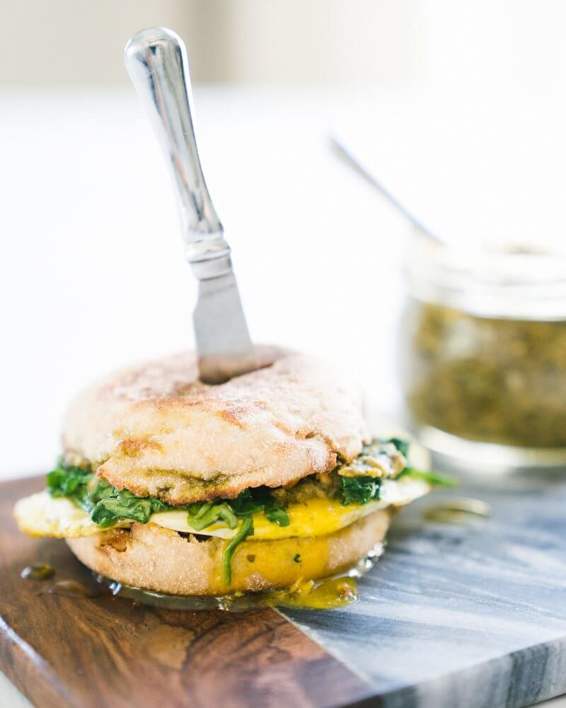

Egg & Pesto Muffin

Description
One of the most common breakfast foods is the egg and this dish is super easy with only a few ingredients.
So if you're in a rush or need a protein packed meal, this will be a to go meal. In addition to the protein of the egg, this dish also has spinach.
Spinach is great for reducing blood sugar, aides in bone health and has anti-inflammatory properties.The dish is topped with pesto that you can make yourself or can be store bought.
You can also add cheddar cheese to your sandwich for extra protein. This dish is great for meal prepping and can be stored in the fridge for up on 3 days.
Ingredients
- 1 egg muffin
- 1 large egg
- 50g spinach
- 6g pesto
- cooking spray
- salt and pepper to taste
- 1 teaspoon garlic poweder
- cheddar chesse (optional)
Steps
- Start by toasting the egg muffin in the toaster or in the oven at 350 degrees for 8 minutes.
- In a nonstick pan, coat the bottom with cooking spray and bring to a medium heat. Once pan is hot, add egg and cook for 1 1/2 minutes or until egg whites are cooked.
Once egg white are cooked, turn egg and cook on the other side for about a minute. Egg yoke should still be intact once egg is done cooking.
- Take egg out of the pan and in that same pan add the spinach and a splash of water. Cook until spinach is welted, drain any excess water and season with salt, pepper and garlic powder.
- Assemble sandwich with spinach, egg and top with pesto.
- Enjoy!